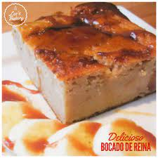

Recipe for Bocado De Reina - Guatemalan Bread Pudding
History
Bocado De Reina translates to Queen's bite in English, is a Guatemalan bread pudding. This recipe can turn stale bread into a dessert.
This dish is popular and is very easy to make and inexspensive.

Ingredients
- Any kind of dry bread
- condensed milk
- Vanilla extract
- Eggs
- Cinnamon
- Rasins
How to make
- Preheat oven to 350F
- Whisk the vanilla extract,condensed milk, eggs, and cinnamon in a glass bowl
- Add crumbled bread, mix well and let it stand for 5 minutes
- Add rasins and mix until thoroughly blended
- Pour into cake mold and bake for 45 Minutes
- Let cool down and cut into squares
- Enjoy!
Sources used: https://growingupbilingual.com/bocado-de-reina-guatemalan-bread-pudding/
Emma V